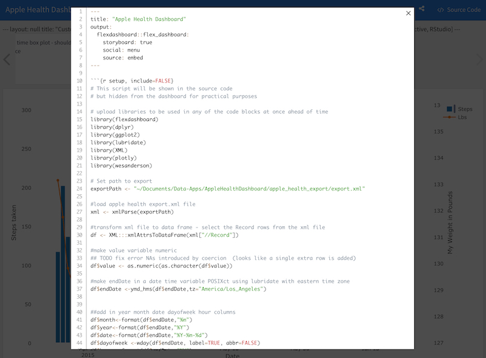

This project turns personal health data into a visual dashboard for reflection and pattern-finding.
2016-09-09 · HealthKit · quantified self · dashboard · R
Apple HealthKit Dashboard
Interactive dashboard from iPhone HealthKit data, built in R with htmlwidgets and flexdashboard packages.
